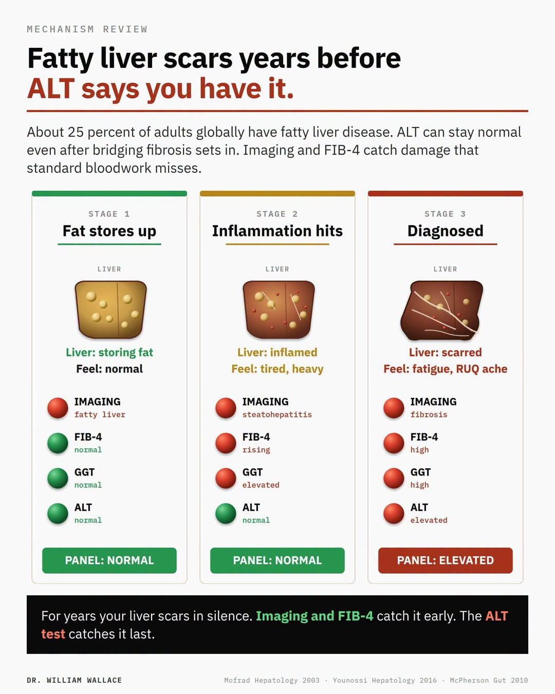

You can have normal liver enzymes and still have fatty liver.
Half of people with fatty liver have normal liver enzymes.
Liver enzymes are not a great predictor of liver fat. The standard test for measuring liver fat is a specialized ultrasound, called fibroscan.
Fatty liver is diagnosed when liver fat exceeds 5%.
Levels above 1.85% are linked with insulin resistance. Lose the extra liver fat above this 1.85% threshold and the insulin resistance typically resolves. See this post: ↪ Liver fat as low as 1.85% is linked to insulin resistance (Yale).
#fattyliverHD #liverfatHD #fibroscanHD #liverenzymesHD #altHD
Most adults who get a routine physical have their liver checked through one number: ALT. If it sits under 40, the system moves on. But ALT only rises when liver cells are actively dying in numbers large enough to spill enzymes into the blood. The slow scarring process that defines the dangerous form of fatty liver disease can advance for years without enough ongoing cell death to push ALT out of range. The standard panel reads normal. The liver is not.
A study in Hepatology biopsied 51 patients with fatty liver disease who all had normal ALT. Twelve had bridging fibrosis. Six had cirrhosis. That is 35 percent with advanced scarring while every blood test said the liver looked fine. The histologic picture in normal-ALT patients was indistinguishable from those with elevated ALT. Selection bias matters: the biopsied group was selected from unexplained liver enlargement and donor evaluations, not population screening. But the existence of substantial fibrosis behind a normal ALT is well established.
Fatty liver disease, recently renamed MASLD (metabolic dysfunction-associated steatotic liver disease) to reflect its metabolic origins, sits in about 25 percent of adults globally per a 2016 meta-analysis of 8.5 million people. Among MASLD patients: 51 percent obesity, 22 percent type 2 diabetes, 39 percent hypertension, 42 percent metabolic syndrome. The disease is the hepatic manifestation of insulin resistance. If you carry any of those metabolic markers, the question is not whether your liver is at elevated risk, but what your imaging and FIB-4 actually show.
Three things catch liver damage earlier than ALT. Imaging is the most direct. Abdominal ultrasound detects steatosis once hepatic fat exceeds roughly 30 percent. FibroScan measures liver stiffness as a non-invasive proxy for fibrosis. MRI-PDFF quantifies fat content with the highest accuracy. FIB-4 is a calculated score using age, AST, ALT, and platelet count: age times AST divided by (platelet count times the square root of ALT). A FIB-4 below 1.45 reliably excludes advanced fibrosis with a 95 percent negative predictive value. Above 3.25 warrants hepatology referral. Between those two numbers is an indeterminate zone that needs further workup. GGT is a sensitive marker of hepatic and biliary dysfunction that often rises before ALT does, particularly in the context of insulin resistance. All of these are available through direct-pay labs without a prescription.
Catching MASLD early matters because the intervention has strong evidence. A 52-week prospective study of 293 NASH patients showed that 5 percent body weight loss produced NASH resolution in 58 percent of patients. Ten percent body weight loss produced NASH resolution in 90 percent and fibrosis regression in 45 percent. Mediterranean diet, resistance training, and management of insulin resistance reduce hepatic fat independent of weight change. The window to intervene is wide on the left side of the trajectory and narrow on the right. By the time ALT flags the problem, the most damaging stage of the disease has usually already arrived.
Mofrad et al., Hepatology, 2003.
Younossi et al., Hepatology, 2016.
McPherson et al., Gut, 2010.
Vilar-Gomez et al., Gastroenterology, 2015.
